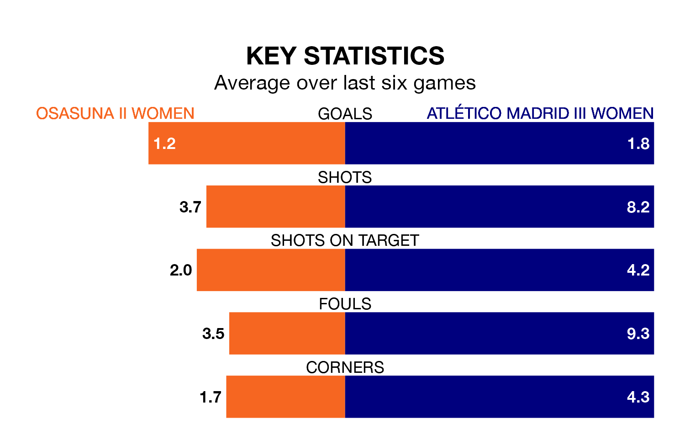

Mid-season relegation candidates Atlético Madrid III Women face a challenge away against high-flying Osasuna II Women on Saturday.
Atlético Madrid III Women are 15th in the Segunda Federación Femenina table, and have picked up six wins and seven draws in their 19 games to date.
Osasuna II, meanwhile, are zero in the standings with 17 points, having won four and drawn five, and are 31 points behind table-toppers Real Madrid II Women.
Osasuna II are in mixed form in the Segunda Federación Femenina, with three wins and a draw from their last six games.
With three wins and two draws over that period, Atlético Madrid III's form is slightly better – they have taken 11 points from 18, compared to the hosts' 10.
With 24 goals in 19 games so far this season, Osasuna II are the league's joint-second-lowest scorers with 1.3 goals per game. And they are conceding more than average, letting in 37 goals at a rate of 1.9 per game.
The away team are also average scorers, with 1.3 goals per game. They have also conceded 1.3 goals per game.
Osasuna II's last match was on Saturday, a 3-2 win against Racing Féminas, with getting the goals for Osasuna II.
Atlético Madrid III drew 2-2 with Bizkerre Women last time out, also on Saturday, with on the scoresheet.
Updated: 10:28 (UTC), 06/02/24